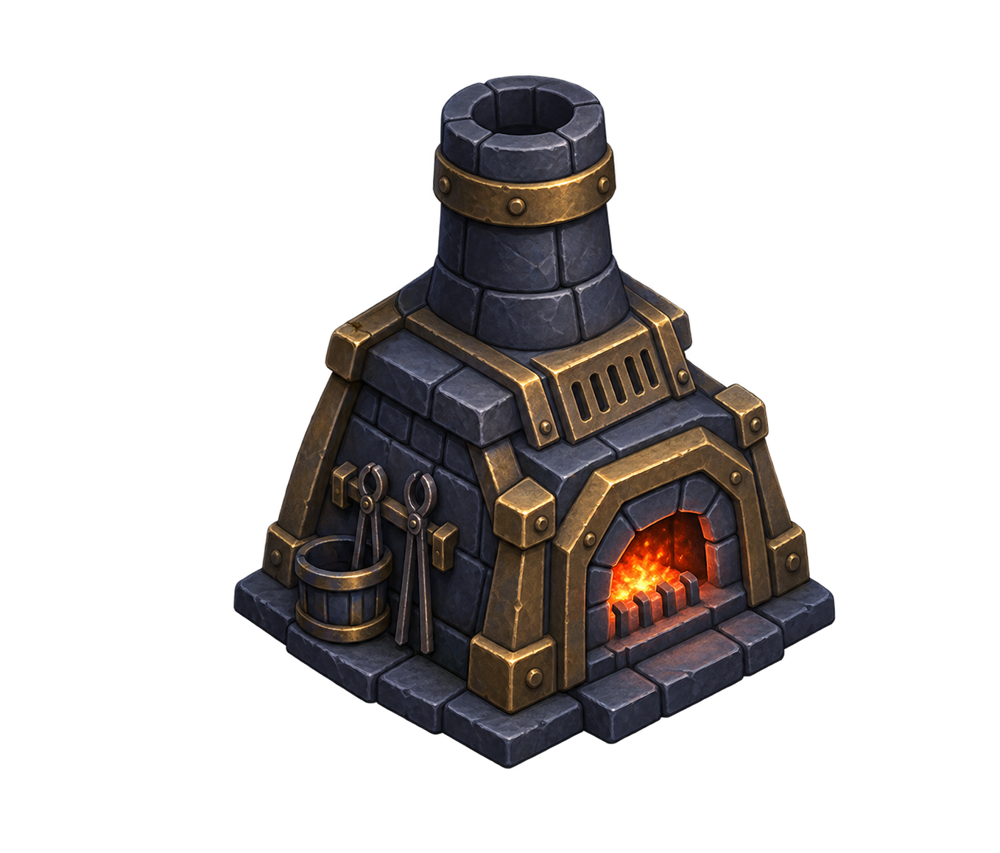

Şeffaf kaynak görsel. Haritanın dış kenarı için; henüz Unity'ye aktarılmadı, çarpışma veya etkileşim içermez.

Kaynak görünümü
≈150 px görünür yükseklik
≈100 px görünür yükseklik
Taban hizası ve duvarla birleşim Unity'de doğrulanacak. Açık yürüyüş yoluna konmayacak.